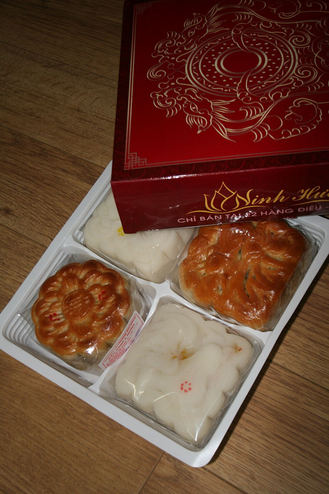

Tiết 2: Tập đọc nhạc số 1: Chiếc đèn ông sao
Nhạc và lời: Phạm Tuyên
Yêu cầu:
Xem video lần 1, nghe kỹ phần giai điệu mẫu.
Xem video lần 2, xướng âm nốt đúng cao độ và trường độ như giai điệu.
Kết hợp đọc nốt và hát lời.
Tác giả: Phạm Tuyên

Phạm Tuyên (1/12/1930) là một nhạc sĩ Việt Nam nổi tiếng, cựu Chủ tịch Hội Âm nhạc Hà Nội, tác giả của bài hát "Như có Bác trong ngày đại thắng", một bài hát cộng đồng được nhiều người hát tại Việt Nam.
Ông sinh ngày 12 tháng 1 năm 1930, quê ở thôn Lương Ngọc, xã Thúc Kháng, huyện Bình Giang, Hải Dương.
Ông có sáng tác nhiều cho lớp trẻ. Nhiều bài hát thiếu nhi đã trở thành bài truyền thống qua nhiều thế hệ như: Tiến lên đoàn viên, Chiếc đèn ông sao, Hành khúc Đội thiếu niên Tiền phong Hồ Chí Minh, Đêm pháo hoa, Cô và mẹ,...
Ông là Ủy viên Thường vụ Ban Chấp hành Hội nhạc sĩ Việt Nam từ năm 1963 đến năm 1983.
Năm 1993, ông phổ lời Việt cho một số ca khúc chủ đề trong phim hoạt hình Nhật Bản Doraemon cho Đội ca thiếu nhi Thành phố Hồ Chí Minh thể hiện. Ông hiện đã nghỉ hưu và sống tại Hà Nội.
Tết Trung Thu
Tết Trung Thu theo Âm lịch là ngày Rằm (15) tháng 8 hằng năm, đây đã trở thành ngày tết của trẻ em (Tết thiếu nhi), còn được gọi là Tết trông Trăng hay Tết hoa đăng. Trẻ em rất mong đợi ngày này vì thường được người lớn tặng đồ chơi, thường là đèn ông sao, mặt nạ, đèn kéo quân, tò he,... và được ăn bánh nướng, bánh dẻo. Vào ngày này, người ta tổ chức bày cỗ, trông trăng. Thời điểm trăng lên cao, trẻ em sẽ vừa múa hát vừa ngắm trăng phá cỗ. Ở một số nơi người ta còn tổ chức múa lân, múa sư tử, múa rồng để các em vui chơi thoả thích. Tại Trung Quốc và các khu phố người Hoa trên thế giới còn có tổ chức bắn pháo hoa trong ngày này.
Tết Trung Thu là lễ hội tại các quốc gia Đông Á và Đông Nam Á như Trung Quốc, Việt Nam, Nhật Bản, Triều Tiên, Đài Loan, Singapore, ngày này cũng là ngày nghỉ lễ quốc gia tại Đài Loan, Bắc Triều Tiên và Hàn Quốc.
Các câu hát về Trung Thu:
Bài Đêm trung thu: (Nhạc sĩ:Phùng Như Thạch)
Thùng thình thùng thình trống rộn ràng ngoài đình
Có con sư tử vui múa quanh vòng quanh
Trung thu liên hoan trăng sáng ngập đường làng
Dưới ánh trăng vàng em cất tiếng hát vang
Bài Rước đèn tháng tám: (Nhạc sĩ Đức Quỳnh (tên thật là Vân Thanh))
Tết Trung Thu rước đèn đi chơi
Em rước đèn đi khắp phố phường
Lòng vui sướng với đèn trong tay
Em múa ca trong ánh trăng rằm
Đèn ông sao với đèn cá chép
Đèn thiên nga với đèn bướm bướm
Em rước đèn này đến cung trăng
Đèn xanh lơ với đèn tím tím
Đèn xanh lam với đèn trắng trắng
Trong ánh đèn rực rỡ muôn màu